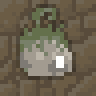
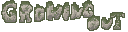
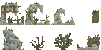
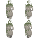
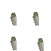
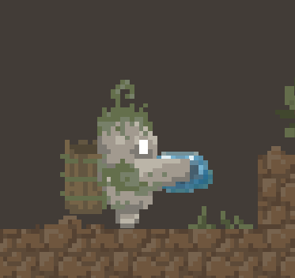
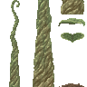
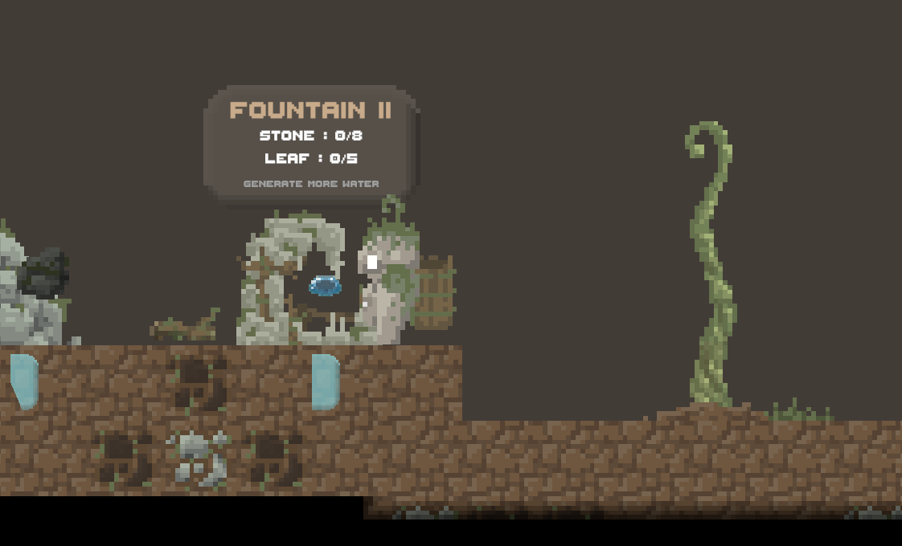
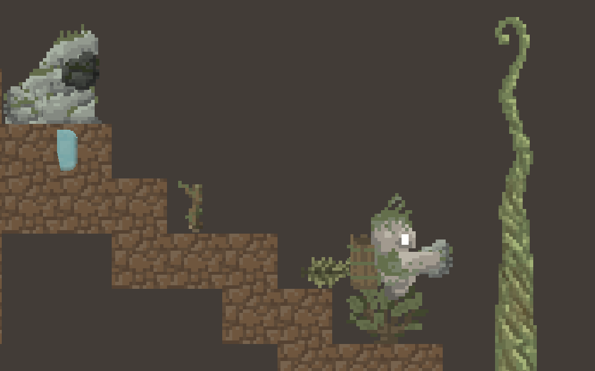

Magna
Sed nisl arcu euismod sit amet nisi lorem etiam dolor veroeros et feugiat.

A 2D ressource collection game - Spring Jam '25

Project Type:
Game
Platform:
PC/WebGL
Team Size:
Solo
Role:
Solo Developer
Engine/Software:
Unity, Krita
Project URL:
In Growing Out, the player controls a tiny little stone golem, waking up stuck in a dark hole in the ground with nothing but a small bud in the ground to hope getting out. Using the various stations and ressources in this cave, the player must gather the required ressources to grow the plant up from a sprout to a tall stalk so they may climb the leaves and escape.
Made for the Spring Jam '25 event, with the theme set at "Overgrown". For this jam, I wanted to explore a more laid back style of platformer game, where the player could take their time gathering ressources without the pressure of time or dangers. Because of personal time issues during the game jam, many features of the game are missing, and will be detailed in this article for a better idea of the full game's potential.
Solo Developer: as the sole developer of Growing out, I developped every element of Growing out (visuals and programming).
Self-made Assets: developped during the time of the jam using Krita.
Platformer Character Controller: platformer controls with an added item carrying feature.
Level Design: incrementally available sections unlocking more options to progress quicker.
Stone Golem: the player's character, with simple platformer movement. It can pick up a single ressource at a time and carry it around.
Ressources : stones, leaves, sticks, water droplets, or compost
Mines : either rock piles or small bushes, they can generate respectively stones and leaves when hit by the player
Stations : the water fountain produces water droplets constantly, and can be upgraded to produce more. Similarly, the compost bins can produce compost when given leaves, but require to be built first
Main Plant: bringing the correct ressources to it (indicated by the UI) will make it grow, stage by stage. Each new stage can sprout new leaves on which the player can climb and reach new areas to obtain more resources

Sprites of mines and stations
The golem controls as a typical platformer, with simple side movements and jumping with the added item picking up and dropping. In the full project, the player had access to an inventory, symbolised currently in game by the backpack equipped on the golem.


Split Walking Spritesheets of the golem
The visuals for the character are split between the arm and the body as two separate sprites. With idle and walking animations, the main body could therefore be animated independently from the arm easier depending on items held.

Closeup on the golem holding an item
Missing Character Features : in addition to the backpack, the character is missing some key platformer features that were pointed out by playtesters after the jam. Firstly, being able to drop down through some of the platforms to facilitate navigating the level. Secondly, throwing the items in order to manage the collected items better and limiting the back and forth in the level. And thirdly, responsiveness. As this game was made in a time constrained environment, the golem is missing polish in the jump as well as coyote time types of upgrades.

Plant growth stages spritesheet
The whole the game circles around the plant at the center of the level. It begins as a small sprout that requires water to grow, and as the requirements are fulfilled it grows more and more. Each time it grows, it can reveal fresh leaves that the player can climb on, and the requirements will become greater to keep progressing.
The plant simulates "growing" by switching sprites down the entire column according to the plant's current level, flipping along the x axis each time to reduce the immediate impression of repetition to the player.


Different stages if the plat throughout the game